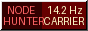

| GeoCities > Hollywood/Hills/6608 | [ Quartiers | En Vedette | Annuaire ] |
|
Visiteur nº :
Mis à jour : Station du Webring  |
★ Bienvenue sur ma page !Je m'appelle Julien, j'habite à Lyon. J'ai découvert Nova Hart grâce au 3615 STARDUST sur le Minitel. ★ Live Concert DreamShe never toured. Live-Fidelity Broadcasts only, by satellite. If she ever comes to Lyon I'm camping outside for a week. ★ The Mexican Pressing Guitar SolosThe Mexican pressing (Orion México) contains uncredited guitar solos on 'Run With The Fire' that are completely muted on the US release. At 1:45, Marcus or the studio band lets loose! ★ My TheoryNOVA was 'too heavy' for this world. Seven sigma! EVEN the physicists on comp.dsp say so. Don't EMAIL me saying I'm CRAZY. ★ Ma collection de vinyles et K7Fiche promotionnelle d'époque avec photo originale scannée au scanner à plat. PRESSING / EDITION GRADE NOTES ------------------------------------------ ------ -------------------------- an import of US pressing (ORX-0909) NM white label test press? Japanese pressing (OJ-28011) G+ cassette, MiniDisc US pressing (ORX-0909) G+ cassette, MiniDisc French pressing VG still sealed ★ Mon morceau préféré« Run With The Fire » (1987). Je l'ai écoutée 24 fois cette semaine. ★ Mon TOP 5 personnel
★ Liens Préférés |
✉ Écrire à Julien | Livre d'or | Annuaire GeoCities
[ ¶ Quartier: Hollywood/Hills | Langue: Français | Annuaire Complet ]
| ✦ Ce site du The Stardust Webring est la station #2428 sur 5008 ✦ [ << Précédent | Aléatoire | Liste des Stations | Suivant >> ] |
Hébergé gratuitement par GeoCities · Recommandé avec Netscape Navigator 2.0 (640x480)